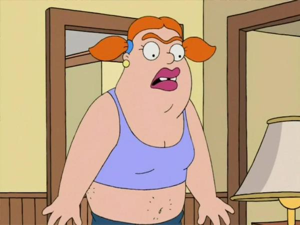

We all know someone who’s been on a blind date, but is it really the way to go, especially in an era of Internet and smartphones, where anybody can send a selfie in less than 20 seconds? Well, it depends. Depends on your adventurous spirit, your state of mind at that time, your boredom level, but most importantly it depends on the other person’s vibe.
Opportunity is everywhere for a single guy out there. Dating sites, dating apps, “Cupid” friends, Facebook… you name it. Back in the day we used to rely on the person that played Cupid, on their taste, on their judgement and we had to hope it was not a prank. I surely got laughed at by supposedly going on a date, only to find out that my friends set me up and they were all hidden in the bushes, laughing their assess off.
In these fast-pace times we often choose a dating app, being more convinient and less time consuming. But the question is: who are we really dating? Does she really look like the girl in the pictures, the one with a cute smile and lovely hair?
Well, chances are, Photoshop and other photo editing apps are part of her online uploading habbits, not to mention that extra weight hidden behind her selfie. A selfie taken from her best angle, on her best day, with her best make-up on. I’m not trying to say everybody’s playing the game this way, but from my own experience, I can tell you there’s a vast majority out there running all kind of tricks.
I remember having the shock of my life dating a Tinder girl once. Picture this: going out the door with a gorgeous, foxy redhead on your mind, arriving at the dating spot and then, a chubby, not-so-attractive, dwarfy-looking chick smilling at you: “Hey, it’s me!”. What in the world?! You’re not the one I have been fantasising about every night for the last week. No way! Believe me... it can be a real shocker.
Since that, let’s call it, unlucky date, I’ve learned my lesson: never date someone until you see at least her Facebook profile. Facebook has a lot of history, you can scan photos from 2-3 years ago, photos in which others have tagged her and she’s not necessarily in her best shape.
I’m telling you, do your homework first and investigate all available sources. This way you can minimize the chances of having a real live shock from your "blind" date. Best of luck! It's a jungle out there!